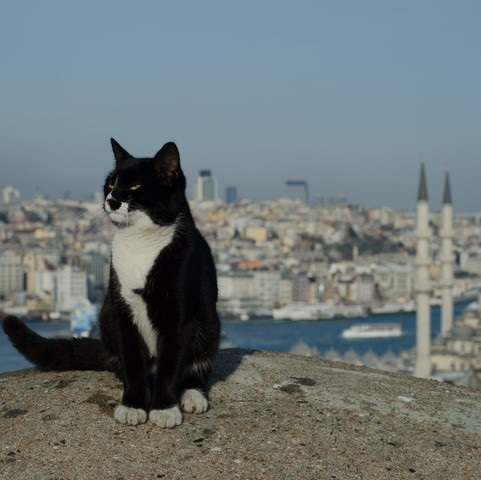
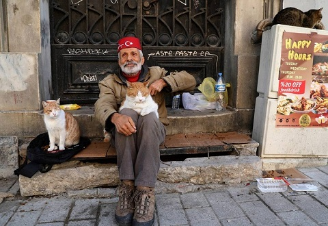

Conheça Istambul, a capital que possui um carinho especial pelo gatos
Você já deve ter ouvido falar de Istambul antes, a capital da Turquia que está dividida entre a Europa e Ásia. Mas você sabia que nessa cidade as pessoas tem um carinho especial pelos gatos?
Istambul, originalmente chamada de Constantinopla pelo imperador Constantino I, foi fundada no século IV d.C. Foi a capital do Império Romano do Ocidente e sua principal cidade portuária ao longo dos séculos. Isso graças ao estreito de Bósforo, que separa a Europa e a Ásia.
Atualmente, é conhecida como Istambul, nome dado com a chegada do Império Otomano. O sultão Mehmed II mudou o nome da cidade por motivos políticos.
A lenda de Maomé
Os islâmicos possuem um carinho especial pelos gatos. Rezam lendas que Maomé tinha um gatinho, e uma vez ele estava meditando e foi chamado pra resolver assuntos importantes. Entretanto, seu gato estava sentado em sua túnica, então Maomé cortou sua túnica para poder ir resolver seus afazeres de forma que não fosse incomodar o gato e o deixasse deitado na mesma posição.
Há também outra lenda em que um Sultão do Império Otomano tinha tanto amor pelos gatos que decretou uma lei em Istambul, que seria crime se qualquer pessoa cometesse algo de mal para um gato.
Atualmente em Istambul
Hoje em dia, é quase impossível caminhar pela cidade sem que haja vários gatinhos pelas ruas ocupando seus lugares de direito.
Além disso, os comerciantes, moradores e a população em geral, cuidam com muito respeito e principalmente amor de todos os gatinhos.
Depois de saber disso, vai falar que você não também não ficou com vontade morar nesse paraíso dos gatos?!